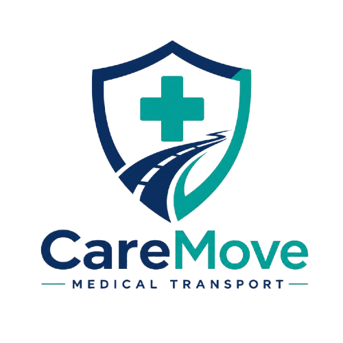

CareMove 為出院、專科覆診及院舍陪診提供安全、無障礙點對點接送。自備香港認證福祉車及專業輪椅/輪床，給家人最安心的出行體驗。
100%
每程清潔消毒
門對門
床對床無障礙接送
透明
一口價無隱藏費用
專屬司機搭配陪診員/護士，協助掛號、陪診、取藥
斜道/升降上落、安全固定鎖、家屬可舒適隨行
無需頻繁轉移，提供平穩安全的門對門搬運
點對點無障礙專業接送，首單預約即享 全單 8 折優惠！
覆診接送連陪診員
後續加時：$250 / 小時
覆診按時包車服務
後續加時：$200 / 小時
針對不同出行需求，提供最適合長者及行動不便者的專屬醫療接送方案
護士直達病房接送，協助辦理出院手續、領取藥物，並安全護送長者回到家中床前。
定期往返診所、洗腎中心或醫院專科覆診，按時準確接送，免卻家人請假奔波。
提供跨區或點對點院舍入住、休養轉送服務，全車配置安全固定扣，行程平穩順暢。
從病房到家門，我們為您妥善安排每一個細節
護士親自前往病房，協助平穩轉移至輪椅或輪床，準備安全上車。
協助跟進出院手續，代為整理及保管出院藥物、診斷報告與護理須知。
專車直達目的地，提供門對門/床對床安全搬運，行程全程舒適平穩。
護士親自向家屬詳細說明醫生囑咐、服藥時間表及日常居家照護重點。
嚴謹的安全固定規格與每程消毒，確保行程衛生無虞
每次完成接送任務後，車廂及輪椅/擔架設施均使用醫療級消毒用品徹底擦拭，確保車廂無菌潔淨。
配備符合國際安全標準的輪椅地扣與獨立安全帶系統，車輛行駛過程中極致平穩安全。
車上備有電子血壓計、額溫槍及血氧儀，護士隨時監測長者途中的生命體徵變化。
選用香港認證福祉車型，配備低斜道/升降設備，並備有家屬專屬舒適座位，可陪伴同行。
請提前預約，我們將盡快為您確認行程與安排。支援轉數快 (FPS)、PayMe、支付寶香港及現金付款。